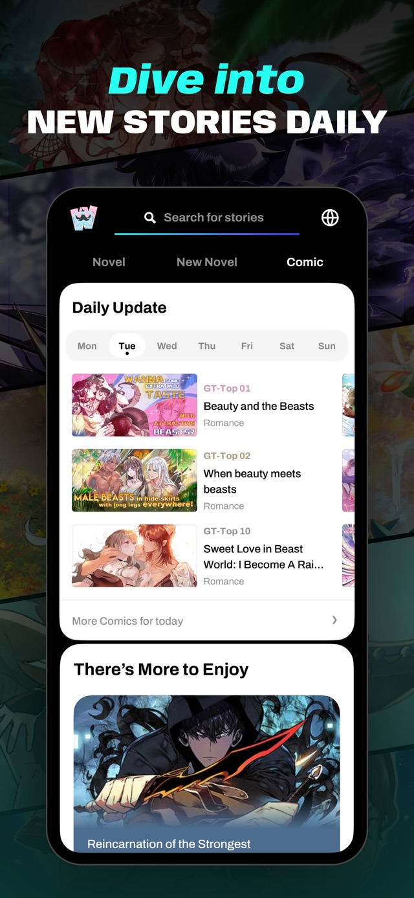

WebNovel 追更实战：免费党怎么把每日额度用满
从零带你在 WebNovel 上追更中文网文译本和海外原创，重点讲透每日任务动线、Fast Pass 券的正确用法，以及漫画区按周追更的节奏判断。
这篇教程走完，你能在 WebNovel 上不花一分钱追完一部连载中的网文，还能把漫画区的按周更新节奏摸得门儿清。
准备工作
WebNovel 是阅文集团面向海外的阅读应用，它的官网上有完整的产品介绍和社区动态。先说三件事，省得后面踩坑。
第一，你用什么设备。 WebNovel 有安卓 APK、iOS App Store 版和网页端，三端账号通用。安装包从官方下载拿，iOS 用户走 App Store 正规渠道。界面支持 18 种语言，默认是英文——如果你习惯用中文界面，注册后在设置里切语言就行，切完整个应用包括任务说明都会变成中文，对新手友好很多。
第二，提前想好用什么账号登录。 支持邮箱、Google、Facebook 和苹果 ID。建议直接邮箱注册，后面换设备最省心，不会因为社交账号授权问题卡在登录上。
第三，先搞清楚货币体系。 这是 WebNovel 最容易让人懵的地方，先记牢两样东西：金币（Coins）是硬通货，充钱才能拿；Fast Pass 券是免费章券，靠任务发，七天过期。积分（Points）换装扮用的，跟追更没关系。教程后半段会反复用到 Fast Pass，现在先有个印象。
第一步：注册并切到你舒服的语言
打开应用，选择邮箱注册——填邮箱、设密码、点确认，邮箱里收个验证码就搞定。登录后进首页，点右下角的「Me」（我的），找「Settings」（设置），进「Language」（语言），选「简体中文」。
切完语言你会发现整个应用的文案瞬间变成中文，包括后面要做的每日任务、签到弹窗、章节解锁提示——全中文环境下跟着教程走就不会迷路。这一步五分钟内能搞定，但如果跳过直接用英文界面，后面操作起来会慢很多。
第二步：把想追的书加进书架
切完语言回到首页，先搜书名。中文网文译本直接搜中文名就行——《诡秘之主》《天下第九》《全职法师》这些热门作品都能搜到官方英译本；海外原创作品搜英文名，比如《Shadow Slave》《Only I Level Up》。
搜到书后进详情页，点中间那个「+」号，就加进书架了。注意看详情页下方的标签：带「Translation」的是中文译本，带「Original」的是海外原创。两者共用同一套更新和付费体系，但中文译本的更新节奏更稳，海外原创偶尔会跳票。
书架最多能放 50 本书，追更党一般在 10~20 本之间比较舒服——太多了每天读不过来，太少了任务攒不动。
第三步：走一遍每日任务动线（十分钟拿满免费额度）
这是教程的核心。每天打开应用，按这个顺序走一遍，十分钟搞定，免费额度全部拿满。
签到： 首页往下滑，找到「每日任务」卡片，第一条就是签到。点一下就完成，奖励 Fast Pass 免费章券。活动期奖励可能更多，日常数额以当期显示为准。这步只需要点一下，一秒完成。
读满十分钟： 任务清单里第二条是「任意书籍读满十分钟」。这步不用刻意计时——正常追更昨晚的更新，读两章就到十分钟了，进度自动累计。读到时间后回任务卡片领积分奖励。
投票领券： 读完每章，页末会出现投票按钮，投一次力量石或能量石，系统会顺带领一张 Fast Pass 券。投票本身还有隐藏福利：投得多了账号等级升高，每日能投的投票券数量会增加，相当于每天多一张免费章。
看广告视频： 每天有一次看广告领券的机会，广告一般 15~30 秒，看完直接到账。这步放最后做，别一开始就花掉，因为券七天过期，等当天你把其他任务的券用得差不多了再看广告拿新券，省得先领的先过期。
走完这四步，你当天的免费额度就拿满了。一套流程下来，签到 1 张、投票 1 张、广告 1 张，加上读满十分钟的积分，基本能覆盖一部连载书当天新更的全部章节。更细的任务规则和券的使用限制，webnovel文档里有完整说明。
第四步：漫画区按周追更怎么玩
小说区是日更为主，漫画区的节奏完全不同——每部条漫固定在每周某一天更新。进漫画区，顶部有 Mon 到 Sun 七个日期标签，当前是周几就默认落在哪一栏。

想找新漫画看，就点当天的日期栏，里面按 GT-Top 排名排序——GT-Top 01、GT-Top 05、GT-Top 10，排名越靠前越热门，试错成本低。在追某部漫画的话，记住它的固定更新日，养成每周那一天来收的习惯，比每天瞎逛高效得多。
如果追的漫画在它该更新的那天没出现，先别急着弃坑——条漫制作周期长，官方偶尔跳票两周再补更很常见。连续两到三个更新周没动静，再去作品页看官方公告，那时候再考虑弃书不迟。
三个新手最容易翻车的地方
翻车一：攒券追更。 很多人想：我每天领一张券，攒一个月不就有 30 张了，到时候一口气追完一部完结书——做不到。Fast Pass 券领了之后七天就过期，先领的先作废。正确的用法是当天领当天用，别攒。
翻车二：积分和券搞混。 每日任务有两类奖励：Fast Pass 券是开付费章节用的，积分（Points）是进积分商店换头像、头衔、装扮用的，跟追更没关系。看到积分涨了别激动，那不是阅读额度。
翻车三：漫画更新日判断。 刚追某部漫画时没记下它的固定更新日，每天都去看有没有更新——浪费时间。加漫画进书架时顺手记一下更新日，或者每周打开漫画区的更新日历瞅一眼，就够了。
进阶一句话
等你把免费党路线走顺了，想进一步提升阅读体验的话，可以研究一下抢先读机制——部分热门作品有「抢先读」分层，提前付费解锁后续章节，追更党比免费党早一到两周看到剧情，具体值不值看你追的是哪本书。WebNovel 的完整资料和说明文档，分别整理在GitHub、Gitee和GitCode上，国内读者走 Gitee 或 GitCode 访问更顺畅。